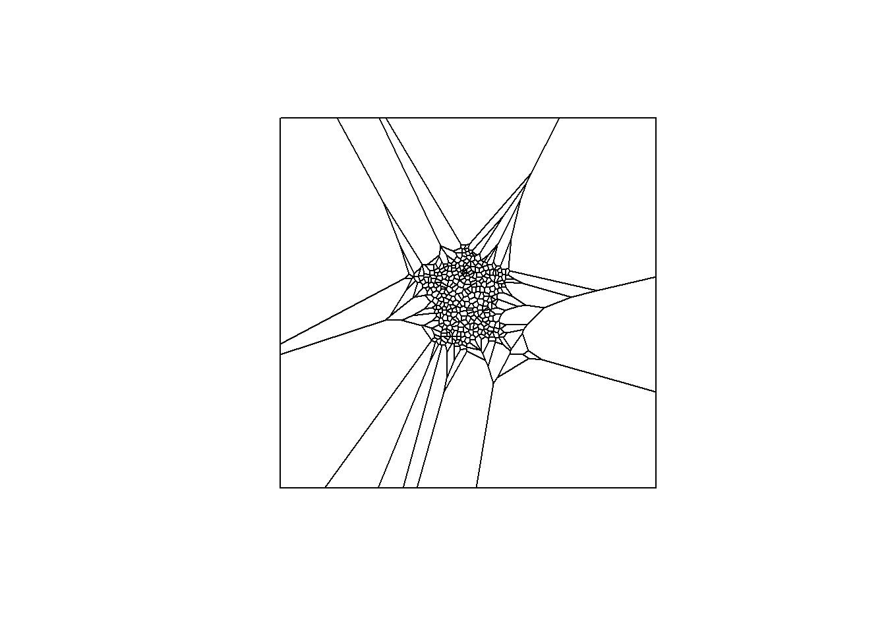
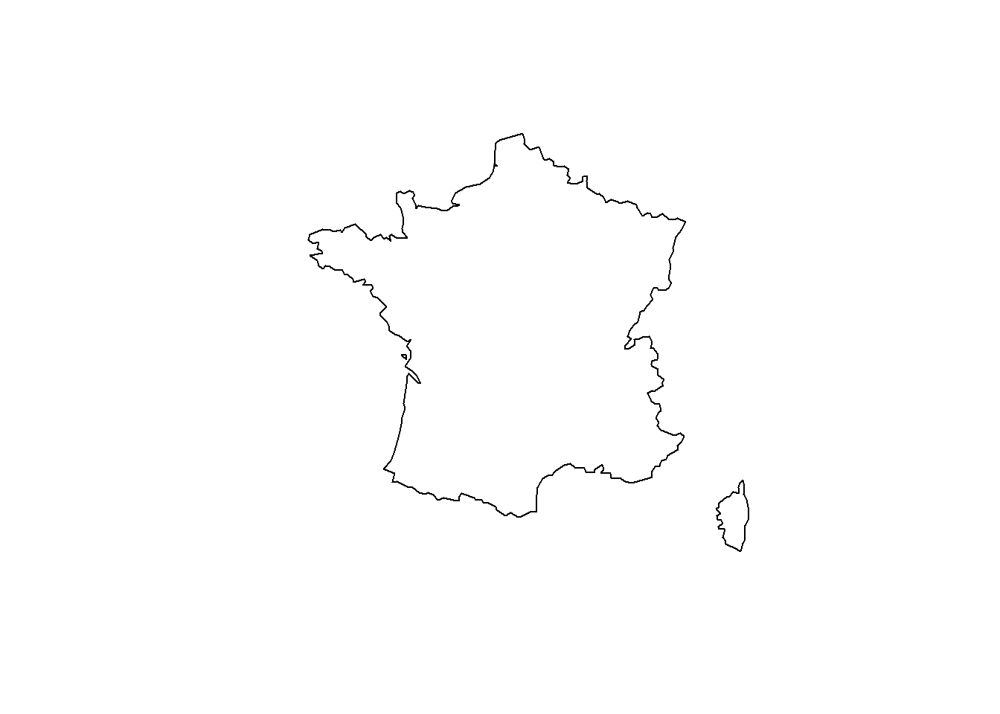
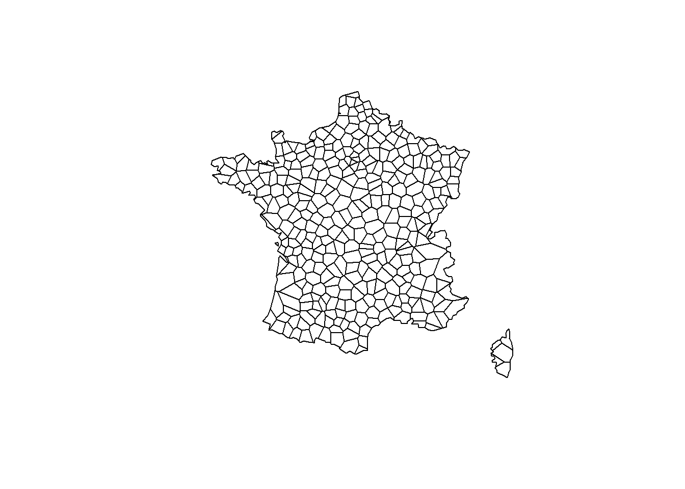
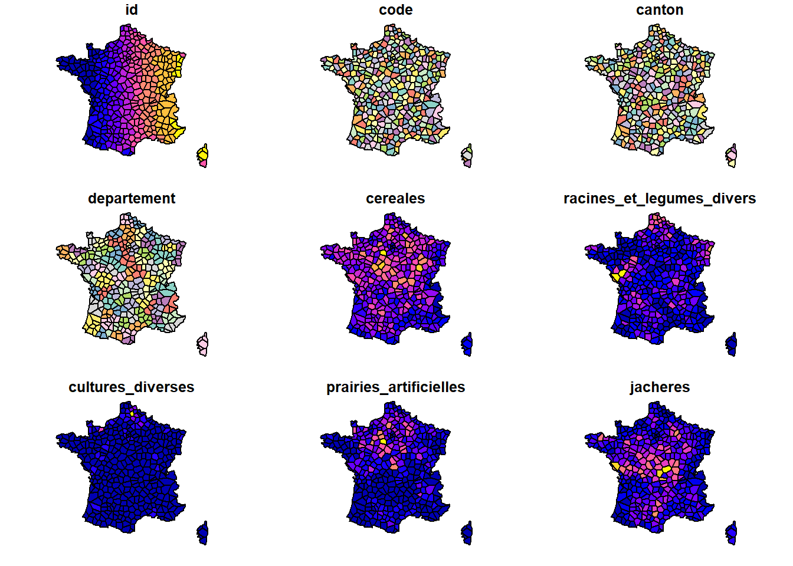
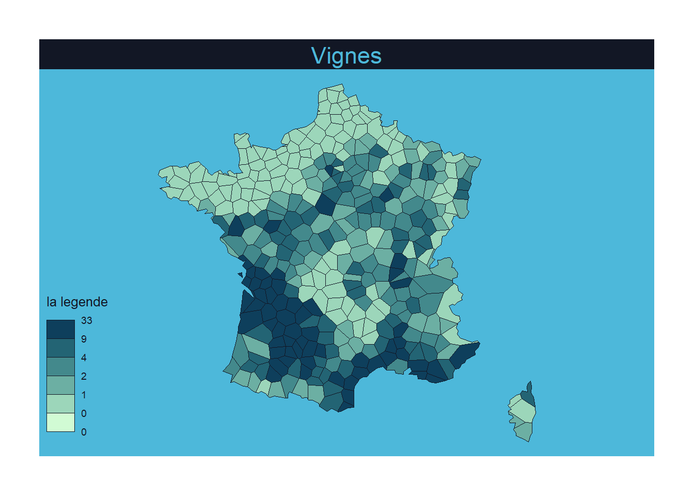

Agriculture, 170 ans d’histoire
Produire un fond cartographique à l’aide de données historiques
Objectifs
Mieux connaitre les pratiques agricoles de 1852, période où la France est très rurale et agricole. L’exode rural commence à peine et l’urbanisation est limitée. En spatialisant les données du recensement de 1852, vous déterminerez si les productions étaient régionalisées. Vous pourrez faire le pont avec les donnés de 2020 pour tenter une comparaison.
En travaillant sur ce sujet vous apprendrez à :
- Interroger une api pour géolocaliser des données
- Créer un découpage géographique hors des limites administratives
- Visualiser des données géographiques
- Créer un dataviz sur Observable (https://observablehq.com/) ou en local
Déroulement du sujet
- Découverte du jeu de données
- Trouver les coordonnées géographiques des chefs-lieux de canton (utilisation d’une API)
- Créer le découpage géographique sur-mesure
- Visualisation simple des données
- Visualisation avancée des données
Rappel sur l’utilisation d’un document quarto
Dans ce sujet nous vous proposons d’utiliser un document quarto qui est le successeur de Rmarkdown. Le principe est de mélanger du texte (Markdown) et des bouts de code que l’on appelle des chunks (code R, Python, Observable…). Le bouton Render permet de produire un document en exécutant les chunks et en transformant le markdown en texte mis en forme. Les formats de sortie sont html, pdf, docx, présentation…
Rstudio propose 2 manières de consulter/modifier un doc quarto :
- Visual : aide à la saise du Markdown et de création des chunks - Source : que du code, moins facile à prendre en main mais plus pur
Les chunks doivent être nommées et des paramètres peuvent être précisées, voir ici : https://quarto.org/docs/computations/r.html
En haut à droite de chaque chunk vous avez 2 boutons. Le premier permet de rejouer tous les chunks qui précèdent le chunk. L’autre permet de jouer le chunk (possible aussi en faisant CTRL + MAJ + ENTREE avec le curseur dans le chunk).
Nous vous proposons de travailler dans les chunks proposés et d’en créer d’autres à votre guise. Attention chaque chunk doit avoir un nom unique. Pensez à faire régulièrement un Render afin de vous assurer que votre code complet compile bien.
Configuration de notre script
La première étape en Quarto est de créer un chunk de setup où l’on appelle les librairies utiles et les éventuelles options. Si jamais des librairies utilisées ici ne sont pas installées dans votre instance de R, nous vous recommandons de les installer dès à présent.
1 - Découverte du jeu de données
Les données proviennent de l’enquête agricole de 1852. Notre analyse porte sur les cultures diverses.
surfaces_ra1852 <- readr::read_delim(here('data/cultures_diverses_RA1852_recap.csv'),
delim=';',
skip = 0) %>%
mutate(canton = str_trim(canton)) ## supprimer les espaces en fin et en début de chaine
summary(surfaces_ra1852) code canton departement cereales
Min. : 10.0 Length:449 Length:449 Min. : 0
1st Qu.:230.0 Class :character Class :character 1st Qu.: 32914
Median :444.0 Mode :character Mode :character Median : 46625
Mean :447.5 Mean : 68438
3rd Qu.:652.0 3rd Qu.: 66606
Max. :895.0 Max. :350094
racines_et_legumes_divers cultures_diverses prairies_artificielles
Min. : 0 Min. : 64 Min. : 0
1st Qu.: 2329 1st Qu.: 1177 1st Qu.: 2847
Median : 4345 Median : 2258 Median : 6492
Mean : 7333 Mean : 4120 Mean :11419
3rd Qu.: 8823 3rd Qu.: 4612 3rd Qu.:13271
Max. :71794 Max. :59763 Max. :99799
jacheres total_des_terres_labourables prairies_naturelles
Min. : 0 Min. : 302 Min. : 0
1st Qu.: 8443 1st Qu.: 55170 1st Qu.: 7035
Median : 16230 Median : 77220 Median : 14059
Mean : 25412 Mean :116723 Mean : 22527
3rd Qu.: 30398 3rd Qu.:122937 3rd Qu.: 26906
Max. :168331 Max. :621280 Max. :225210
vignes autres_cultures_arborescentes paturages
Min. : 0 Min. : 0 Min. : 0
1st Qu.: 342 1st Qu.: 212 1st Qu.: 2720
Median : 4128 Median : 844 Median : 10822
Mean : 9760 Mean : 4450 Mean : 29310
3rd Qu.: 12054 3rd Qu.: 3111 3rd Qu.: 34342
Max. :137706 Max. :85823 Max. :383156
autres_surfaces_ecoumene superficie_totale
Min. : 3122 Min. : 3424
1st Qu.: 19681 1st Qu.:116238
Median : 32970 Median :154466
Mean : 53437 Mean :236206
3rd Qu.: 59352 3rd Qu.:223004
Max. :440353 Max. :974032
marais_susceptibles_d_etre_desseches
Min. : 0.0
1st Qu.: 16.0
Median : 189.0
Mean : 913.8
3rd Qu.: 1009.0
Max. :13571.0 head(surfaces_ra1852)# A tibble: 6 × 16
code canton depart…¹ cerea…² racin…³ cultu…⁴ prair…⁵ jache…⁶ total…⁷ prair…⁸
<dbl> <chr> <chr> <dbl> <dbl> <dbl> <dbl> <dbl> <dbl> <dbl>
1 10 AIN <NA> 176685 18993 10288 19390 24366 249722 83897
2 11 BELLEY AIN 40136 3298 1174 4610 5772 54990 15334
3 12 BOURG AIN 58528 7410 3706 5076 1668 76388 30692
4 13 GEX AIN 6611 1069 546 2596 780 11602 8188
5 14 NANTUA AIN 19347 2262 437 2123 4439 28608 14759
6 15 TREVOUX AIN 52063 4954 4425 4985 11707 78134 14924
# … with 6 more variables: vignes <dbl>, autres_cultures_arborescentes <dbl>,
# paturages <dbl>, autres_surfaces_ecoumene <dbl>, superficie_totale <dbl>,
# marais_susceptibles_d_etre_desseches <dbl>, and abbreviated variable names
# ¹departement, ²cereales, ³racines_et_legumes_divers, ⁴cultures_diverses,
# ⁵prairies_artificielles, ⁶jacheres, ⁷total_des_terres_labourables,
# ⁸prairies_naturellesA noter : dans le répertoire data, nous avons mis l’ensemble des données et le dictionnaire des données. A importer ici si vous souhaitez allez plus loin
Les surfaces sont exprimées en hectares.
Nous vous proposons de regarder le jeu de données des surfaces_ra1852.
Vous constatez que :
- les données sont présentées au niveau départemental et des cantons (selon le chef-lieu). Attention aux doubles comptes dans vos analyses !
- les départements et les cantons ne sont pas les mêmes que ceux que l’on connait actuellement. Le défi est ici : représenter spatialement les données alors que l’on n’a pas de fond de plan avec le découpage des cantons de 1852.
Pour s’amuser avec les données, afficher le tableau des surfaces de votre canton (pour nous c’est “Toulouse”).
mon_canton <- surfaces_ra1852 %>%
filter(canton == "TOULOUSE") %>% ### Changer ici avec votre canton
pivot_longer(-c(code, canton, departement)) %>%
select(-c(code, canton, departement)) %>%
print()# A tibble: 13 × 2
name value
<chr> <dbl>
1 cereales 59353
2 racines_et_legumes_divers 6467
3 cultures_diverses 3192
4 prairies_artificielles 10621
5 jacheres 23075
6 total_des_terres_labourables 102708
7 prairies_naturelles 8347
8 vignes 21803
9 autres_cultures_arborescentes 43
10 paturages 5143
11 autres_surfaces_ecoumene 21290
12 superficie_totale 159334
13 marais_susceptibles_d_etre_desseches 0Alors quelle est le type de terre labourable la plus étendue ? Chez nous ce sont les céréales.
Avez-vous un peu de vigne ?
Vous vérifierez que :
- cereales + racines_et_legumes_divers + cultures_diverses + prairies_artificielles + jacheres = total_des_terres_labourables
- total_des_terres_labourables + prairies_naturelles + vignes + autres_cultures_arborescentes + paturages + autres_surfaces_ecoumene = superficie_totale
2 - Trouver les coordonnées géographiques des chefs-lieux de canton (utilisation d’une API)
Pour construire les cartes, nous avons besoin de placer les chefs-lieux de canton sur la carte. Pour cela nous allons :
- obtenir les coordonnées spatiales des chefs-lieux de canton via l’api : geo.api.gouv.fr
- transformer notre dataframe en dataframe géographiques
Coordonnées spatiales des chefs-lieux de canton via l’api : geo.api.gouv.fr
Qu’est-ce qu’une API ?
Pour résumer c’est un ensemble de services, d’outils mis à disposition et accessibles via Internet. Dans notre cas on a à disposition une api qui nous permet d’avoir plein d’informations sur une ville : son département, son code région, ses codes postaux, sa population… et les coordonnées de son centre.
Les services d’une API sont généralement utilisables sur une interface web mais également en ligne de codes ou dans un programme informatique (en R, python…).
Tester l’API en ligne
Pour commencer, regardons comment marche l’api. Nous vous proposons de consulter le site : https://geo.api.gouv.fr/decoupage-administratif/communes
Là vous faites une recherche par code postal et regardez le résultat dans la fenêtre.
Puis vous faites une recherche par nom et regardez le résultat dans la fenêtre. C’est ce service que nous utiliserons car dans le jeu de données nous avons le nom des villes.
Vous pouvez copier la ligne de commande générée car nous en aurons besoin plus tard. Elle ressemble à
curl 'https://geo.api.gouv.fr/communes?nom=Toulouse&fields=departement&boost=population&limit=5' Tester l’API dans un Terminal
Dans Rstudio, vous allez dans l’onglet Terminal et vous coller la ligne de commande copié précédemment.
Supprimez tout ce qu’il y a après le nom de la ville recherchée.
Astuce : pour coller dans un terminal le “CTRL + V” ne fonctionne pas. Il faut faire un clic droit et choisir “Paste”.
Par exemple :
curl "https://geo.api.gouv.fr/communes?nom=Toulouse"Qu’est ce qui se passe ?
Vous constatez que l’API nous donne des informations formatées de manière peu lisible… Mais avec un peu de concentration, on s’aperçoit que l’on obtient les infos suivantes :
- nom : Toulouse
- code : 31555
- codeDepartement : 31
- siren : 213105554
- codeEpci : 243100518
- codeRegion : 76
- codesPostaux : [“31000),”31100),“31200),”31300),“31400),”31500”]
- population : 493465
- _score : 1
On est content d’avoir des informations sur Toulouse. Mais nous constatons que nous avons également des informations sur d’autres villes qui ont Toulouse dans leur nom comme Toulouse-Le-Château et Vieille-Toulouse.
Nous constatons également que nous ne récupérons pas les coordonnées du centroid de la Ville. Il nous faudra l’ajouter dans la requête.
Nous voyons également une variable qui s’appelle “_score”. Cette variable nous sera très utile pour la suite.
Optimiser la requête pour avoir les informations pertinentes pour la ville recherchée.
On va dans un premier temps ajouter le code du département car nous l’avons dans notre jeu de données. Cela limitera le nombre de villes remontées.
Toujours dans le terminal :
curl "https://geo.api.gouv.fr/communes?nom=Toulouse&codeDepartement=31"En sortie, on a moins de propositions mais toujours trop. Pour régler cela, nous allons utiliser les paramètres suivants : - boost = population –> cela permet de prioriser les résultats avec une plus grande population, ce qui est pertinent dans notre cas. - limit = 1 –> on ne veut qu’une ville, celle qui a le score le plus élevée (grâce à boost = population)
Et pour avoir les coordonnées du centre la vill, on ajoute : fields=centre
Toujours dans le terminal :
curl "https://geo.api.gouv.fr/communes?nom=Toulouse&codeDepartement=31&fields=centre&boost=population&limit=1"On obtient bien les coordonnées du centre de Toulouse : “coordinates”:[1.4328,43.6007].
Pour vérifier on peut utiliser google maps, en mettant directement les coordonnées dans l’url après le @ : https://www.google.fr/maps/@43.6007,1.4328,13.5z (le 13.5z est le zoom)
Interroger l’api : geo.api.gouv.fr sous R
Il y a plusieurs possibilités, ici on va utiliser le package jsonlite :
### Création de l'URL
#Sachant que l'on va devoir ensuite faire la requête pour tous les chefs-lieu de canton, on propose une requête type avec 2 champs à completer. Les champs à compléter sont %s
url = "https://geo.api.gouv.fr/communes?nom=%s&codeDepartement=%s&fields=centre&boost=population&limit=1"
# On utilise la fonction sprintf qui prend une chaine de caractères 'url' et qui va remplacer les %s par les paramètres passées ensuite dans l'ordre. Le premier %s est remplacé par "Toulouse), le second par "31"
url_completed <- sprintf(url, "Toulouse", "31")
# on interroge l'API qui est renvoit un JSON qui est convertie en dataframe grâce à la fonction fromJSON
resultat <- fromJSON(url_completed)
print(resultat) centre.type centre.coordinates nom code _score
1 Point 1.4328, 43.6007 Toulouse 31555 5.93465print(resultat$centre) type coordinates
1 Point 1.4328, 43.6007Trouver les coordonnées des chefs lieux des cantaons
On sait trouver le centre pour une ville (avec son département). Maintenant à vous de jouer pour ajouter les colonnes suivantes au jeu de données ra Votre travail consiste à rajouter 2 colonnes, le nom et les coordonnées du centre à la table surfaces_ra1852 :
- code département
- centre
#####################################################################################################################
#####################################################################################################################
####################################### CHUNK A LAISSER VIDE #####################################################
#####################################################################################################################
#####################################################################################################################
### ajout du code_departement
surfaces_ra1852_code_dep <- surfaces_ra1852 %>%
mutate(code = ifelse(code < 100, paste0("0",code), as.character(code))) %>%
mutate(code_departement = str_sub(code, start = 1, end = 2))
### Création de l'URL
url_api = "https://geo.api.gouv.fr/communes?nom=%s&codeDepartement=%s&fields=centre&boost=population&limit=1"
### Fonction pour trouver le centre
trouver_centre <- function(url, lib_canton, code_dep){
lib_canton_tiret = str_replace_all(lib_canton, " ", "-")
url_completed <- sprintf(url, lib_canton_tiret, code_dep)
resultat <- fromJSON(url_completed)
if(length(resultat) > 0){
return(resultat$centre$coordinates[1])
}else{
return(NA)
}
}
### Création du dataframe
surfaces_ra1852_coordonnees_centre <- surfaces_ra1852_code_dep %>%
filter(!is.na(departement)) %>%
rowwise() %>%
mutate(centre = trouver_centre(
url = url_api,
lib_canton = canton,
code_dep = code_departement
)) %>%
ungroup()
### Remplacement des cases en NULL en NA
surfaces_ra1852_coordonnees_centre$centre[surfaces_ra1852_coordonnees_centre$centre == "NULL"] <- NAVérifier les coordonnées des chefs lieux des cantons
Dans le code précédent, nous avons été confrontés à la gestion de NA… Nous vous proposons ici de les identifier et de mettre à jour les coordonnées de ces lieux.
Il se peut que des coordonnées de chefs-lieux ne soient pas trouvés. Identifiez-le et corrigez-les en mettant à jour la colonne centre avec les vecteurs de coordonnées de la ville recherchée.
#####################################################################################################################
#####################################################################################################################
####################################### CHUNK A LAISSER VIDE #####################################################
#####################################################################################################################
#####################################################################################################################
### afficher les coordonnées non trouvés :
liste_coordonnees_non_trouvees <- surfaces_ra1852_coordonnees_centre %>%
filter(is.na(centre))
print(liste_coordonnees_non_trouvees %>%
select(canton, departement, code_departement, centre))# A tibble: 24 × 4
canton departement code_departement centre
<chr> <chr> <chr> <list>
1 LA PALISSE ALLIER 03 <lgl [1]>
2 PONTS L'EVEQUE CALVADOS 14 <lgl [1]>
3 AJACCIO CORSE 20 <lgl [1]>
4 BASTIA CORSE 20 <lgl [1]>
5 CALVI CORSE 20 <lgl [1]>
6 CORTE CORSE 20 <lgl [1]>
7 SARTENE CORSE 20 <lgl [1]>
8 ISSINGEAUX HAUTE LOIRE 43 <lgl [1]>
9 CHALONS SUR MARNE MARNE 51 <lgl [1]>
10 CHATEAU SALINS MEURTHE 54 <lgl [1]>
# … with 14 more rowssurfaces_ra1852_coordonnees_centre_corrigees <- surfaces_ra1852_coordonnees_centre %>%
mutate( centre =
case_when(
canton == "LA PALISSE" ~ list(c(3.6040518, 46.2613646)), # Aujourd'hui tout accroché
canton == "PONTS L'EVEQUE" ~ list(c(0.1415941, 49.2905376)),
canton == "AJACCIO" ~ list(c(8.623262, 41.9228409)), # Problème de département dans la recherche auto pour API
canton == "BASTIA" ~ list(c(9.4033732, 42.686163)),
canton == "CALVI" ~ list(c(8.7198407, 42.5498653)),
canton == "CORTE" ~ list(c(8.9865623, 42.2737575)),
canton == "SARTENE" ~ list(c(8.849981, 41.5753114)),
canton == "ISSINGEAUX" ~ list(c(4.0420206, 45.1343278)), # Avec un Y dans le nom
canton == "CHALONS SUR MARNE" ~ list(c(4.302215, 48.9655892)), # Ancien nom de Chalons en champagne
canton == "CHATEAU SALINS" ~ list(c(6.4721373, 48.8200817)), # Maintenant en Moselle
canton == "SARREBOURG" ~ list(c(7.0063386, 48.7329756)), # Idem
canton == "NAPOLEONVILLE" ~ list(c(-3.0109328, 48.0663472)), # Maintenant Pontivy
canton == "BRIEY" ~ list(c(5.9352709, 49.2584507)), # Maintenant en Meurthe-et-moselle
canton == "SCHLESTADT" ~ list(c(7.4174806, 48.2507288)), # Maintenant Sélestat
canton == "BELFORT" ~ list(c(6.8203836, 47.6458405)), # Maintenant dans le Territoire de Belfort
canton == "SAINT DENIS" ~ list(c(2.3244174, 48.9268478)), # Nouveaux départements pour les villes d Île de France
canton == "SCEAUX" ~ list(c(2.285955, 48.7760123)),
canton == "CORBEIL" ~ list(c(2.4232699, 48.5973693)),
canton == "ETAMPES" ~ list(c(2.1111519, 48.4227852)),
canton == "PONTOISE" ~ list(c(2.0790004, 49.0488144)),
canton == "CASTEL SARRASIN" ~ list(c(0.965407, 44.0536266)), # Aujourd'hui tout accroché
canton == "GRASSE" ~ list(c(6.7666744, 43.6713791)),
canton == "NAPOLEON VENDEE" ~ list(c(-1.5719159, 46.6659612)), # Maintenant La roche-sur-Yon
canton == "REMIRMONT" ~ list(c(6.5603419, 48.0037694)), # Maintenant Remiremont
TRUE ~ centre
)
)Créer les colonnes latitude et longitude à partir de la colonne centre
Il ne vous reste plus qu’à séparer la colonne centre pour avoir la latitude et la longitude.
#####################################################################################################################
#####################################################################################################################
####################################### CHUNK A LAISSER VIDE #####################################################
#####################################################################################################################
#####################################################################################################################
surfaces_ra1852_final <- surfaces_ra1852_coordonnees_centre_corrigees
surfaces_ra1852_final$longitude <- unlist(lapply(surfaces_ra1852_final$centre, function(x) ifelse(!is.null(x), x[1], NA)))
surfaces_ra1852_final$latitude <- unlist(lapply(surfaces_ra1852_final$centre, function(x) ifelse(!is.null(x),x[2], NA)))
### enregistrement
write_csv2(x = surfaces_ra1852_final,
file = here("data/correction_dataframe_intermerdiaire/surfaces_ra1852_avec_ccoordonnees.csv"), na = "" )
# surfaces_ra1852_final = read_csv2(here("data/correction_dataframe_intermerdiaire/surfaces_ra1852_avec_ccoordonnees.csv"))Vérification de l’emplacement des chefs-lieu de canton
Pour vérifier le résultat de notre travail, et pour vérifier également la répartition géographique des cantons, nous vous proposons de réaliser une carte avec un point pour chaque canton.
Utilisez la méthode que vous préférez.
Si vous ne savez pas comment faire, vous pouvez utiliser leaflet avec des markers. La librairie leaflet a été chargée dans le chunk de setup. Il ne vous reste plus qu’à créer le code en vous inspirant de l’aide de leaflet : Aide Leaflet
#####################################################################################################################
#####################################################################################################################
####################################### CHUNK A LAISSER VIDE #####################################################
#####################################################################################################################
#####################################################################################################################
leaflet(data = surfaces_ra1852_final) %>%
addTiles() %>%
addMarkers(lng = ~longitude,
lat = ~latitude,
popup = ~canton,
label = ~canton)3 - Créer le découpage géographique sur-mesure
Découpage géographique grâce au diagramme de Voronoi en R
# pour travailler sur des aspects géographiques dont les voronoi il faut passer du dataframe au géo dataframe
surfaces_ra1852_geo <-
st_as_sf(
surfaces_ra1852_final %>% drop_na(c(longitude, latitude)),
coords = c("longitude", "latitude"),
crs = 4326
)
# on charge la projection pour le mettre en Lambert-93
surfaces_ra1852_geo <- st_transform(surfaces_ra1852_geo, crs = 2154)
# On utilise les fonctions de sf
voronoi_surfaces_ra1852 <- surfaces_ra1852_geo %>%
st_union() %>% ## permet de passer une simple à un seul objet géométrique avec tous les points
st_voronoi() %>% ## calcul du voronoi
st_collection_extract() ## extraction en une liste avec les 363 figures géométriques
# Visualisation simple
plot(voronoi_surfaces_ra1852)
Amélioration du découpage géographique
Dans le graphique généré dans le précédent chunk, on reconnait la France en zoomant. Mais la zone n’est pas limitée aux limites de la France. Donc il faut réduire le découpage à l’emprise de la France, pour ce faire :
- utiliser le fond des départements (read_sf, attention à la projection 2154);
- Appliquer un st_union, et réaliser une st_intersection
#####################################################################################################################
#####################################################################################################################
####################################### CHUNK A LAISSER VIDE #####################################################
#####################################################################################################################
#####################################################################################################################
dep <- sf::read_sf(here('data/dep2021_simplify2.json'), crs=2154)
### enlever outre-mer
dep_metro <- dep %>%
rowwise() %>%
filter(nchar(dep)==2) %>%
ungroup()
### ne garder que les coutours de la France
dep_union <- st_union(dep_metro)
plot(dep_union)
### ne garder les voronoi uniquement qui sont en intersection avece les contours de la France
voronoi_surfaces_ra1852 = st_intersection(voronoi_surfaces_ra1852, dep_union)
plot(voronoi_surfaces_ra1852)
4 - Visualisation simple des données
Nous avons un pavage de la France selon les chefs-lieux de canton et les données par canton. Nous pouvons visualiser les données grâce aux cartes directement en R.
Jointure données et fond géographique
Pour visualiser les données il faut joindre les données géographiques et les données du recensement de 1852.
A vous de jouer.
#####################################################################################################################
#####################################################################################################################
####################################### CHUNK A LAISSER VIDE #####################################################
#####################################################################################################################
#####################################################################################################################
# un peu de manipulation pour créer la table : cf l'aide de st_as_sf
data_voronoi <- data.frame(id = 1:length(voronoi_surfaces_ra1852))
data_voronoi <- data_voronoi %>%
cbind(voronoi_surfaces_ra1852)
data_voronoi <- st_as_sf(data_voronoi)
# correction point de calvi qui est hors de la carte si st_join.
new_calvi <- st_point(c(1180000, 6180000))
surfaces_ra1852_geo$geometry[surfaces_ra1852_geo$canton == "CALVI"] = new_calvi
# Je créé la jointure entre mes points et mes polygons voronoi
voronoi_surfaces_final <- data_voronoi %>%
st_join(surfaces_ra1852_geo)
plot(voronoi_surfaces_final)
write_csv2(x = voronoi_surfaces_final, file = here("data/correction_dataframe_intermerdiaire/voronoi_surfaces_final.csv"))Cartes en R
Questions à se poser ?
- Quelles variables représenter ?
- Quelles représentations ? (les ronds sont possibles, mais bon, vous n’avez pas créé des polygones pour rien)
- Les pièges à éviter ?
Quelques idées de carte à réaliser :
- Part des terres labourables par canton
- Part des surfaces de céréales
- Part des surfaces de vigne
- Part des prairies artificielles
A vous de jouer…
Pour apprendre à faire des cartes en R, vous pouvez consulter le site :
- en GGPLOT : Site de Mael Theuliere - GGPlot
- avec tmap : Site de Mael Theuliere - tmap
- avec mapsf : Documentation Mapsf
#####################################################################################################################
#####################################################################################################################
####################################### CHUNK A LAISSER VIDE #####################################################
#####################################################################################################################
#####################################################################################################################
carto_terres_labourables_par_canton <- voronoi_surfaces_final %>%
mutate(part_labourable = round(100 * total_des_terres_labourables/superficie_totale, -1)) %>%
ggplot() +
geom_sf(aes(fill = part_labourable),color="grey",size=.2)+
scale_fill_gradient(name = "Part des terres\nlabourables en % \nde la surface totale", limits = c(0, 100),
low = "white", high = "forestgreen") +
theme_map()
carto_terres_labourables_par_canton
#####################################################################################################################
#####################################################################################################################
####################################### CHUNK A LAISSER VIDE #####################################################
#####################################################################################################################
#####################################################################################################################
carto_cereales_par_canton <- voronoi_surfaces_final %>%
mutate(part_cereales = round(100 * cereales/total_des_terres_labourables, -1)) %>%
tm_shape(projection = st_crs(2154)) +
tm_polygons("part_cereales",
textNA="Valeur manquante",
style = "jenks",
palette = get_brewer_pal("OrRd", n = 5, contrast = c(0.2, 1)),
title = "Part des céréales\n en % de la \nsurface labourable") +
tm_layout(main.title = "Surfaces exploitées pour les céréales \n en France en 1852",
main.title.size = 1.2,
bg.color = "skyblue",
legend.position = c("left","bottom"),
legend.bg.color = "white",
legend.bg.alpha = .4,
legend.outside = F,
main.title.position = "center",
frame = FALSE)
carto_cereales_par_canton
#####################################################################################################################
#####################################################################################################################
####################################### CHUNK A LAISSER VIDE #####################################################
#####################################################################################################################
#####################################################################################################################
mf_theme("nevermind")
v_ra1852_part <- voronoi_surfaces_final %>%
mutate(part_vignes = vignes / superficie_totale * 100)
plot.new()
mf_map(x=voronoi_surfaces_final)
mf_map(
x =v_ra1852_part,
var = "part_vignes",
type = "choro",
pal = "Dark Mint",
breaks = "quantile",
nbreaks = 6,
leg_title = "la legende",
leg_val_rnd = 0,
add = TRUE
)
mf_title("Vignes")
5 - Visualisation avancée des données
Maintenant que nous avons les données et que l’on sait faire des cartes, nous pouvons faire parler des données de 1852. Et nous vous proposons de créer une dataviz sur ces données. Plusieurs solutions :
- utiliser quarto
- avantage : simplicité
- inconvénient : manque d’interactivité
- avantage : simplicité
- créer une application shiny
- avantage : vrai application web avec mise en page sur mesure et interactivité
- inconvénient : pas facile à prendre en main et nécessite un serveur web pour publier
- avantage : vrai application web avec mise en page sur mesure et interactivité
- créer une page dans Observable
- avantage : page web interactive accessible sur internet
- inconvénient : pas de données privées; apprentissage d’un nouveau langage (mais assez facile à prendre en main avec les aides à la saisie en ligne)
- avantage : page web interactive accessible sur internet
A vous de choisir !
Si vous souhaitez étoffer votre dataviz, n’hésitez pas à aller piocher dans les données autres que surfaces. Dans data/donnees_detaillees_ra_1852, vous trouverez la description globale des données du ra_1852 ainsi que les données sur les animaux, les céréales, les cultures diverses, l’économie rurale et la sériculture.
Ici nous vous accompagnerons dans la prise en main d’Observable.
Présentation d’Observable
Observable peut être utilisé de 2 manières : dans le site Observable ou dans un outil de développement (pour nous en quarto on peut faire des chunks observable). Parlons dans un premier temps du site internet. Observable permet de créer des notebooks permettant d’explorer et visualiser les données.
L’utilisation d’observable est gratuite mais sans compte payant tous vos notebooks (et donc toutes vos données) seront accessibles publiquement sur internet. Aucune donnée confidentielle ne doit être utilisée dans le site observable.
Les notebooks d’observable peuvent être partagées avec d’autres utilisateurs. La collaboration est facilitée, sur le même document ou en créant des nouveaux notebooks en copiant le notebook initial (fork).
Les graphiques créés dans Observable peuvent être exportés en png ou svg. C’est idéal pour être réutilisé dans un site web ou dans une publication papier.
Quelques exemples de notebooks :
Et bien sûr notre magnifique notebook :
- Le recensement agricole de 1852
Pour utiliser Observable, il faut se créer un compte. Pour cela il faut cliquer sur Sign up sur la page Observable .
Prise en main
Suite à la création de votre compte, il vous est proposé un cursus de formation/prise en main. Nous vous recommandons de suivre ce cursus. Vous créerez vos premiers notebooks. Dès que vous êtes suffisamment avancés, vous pourrer passer à la création de votre première page sur le recensement 1852.
Sinon il est possible de faire quelques tutoriels et de consulter la documentation.
Création d’une page observable sur le recensement 1852
Nous vous proposons de créer un page sur le recensement de 1852 avec pour objectifs :
- de recréer les cartes R en Observable
- d’apporter un peu de réactivité
- de créer des graphiques D3
Etape 1 - import des données
Après avoir créé votre notebook, vous importez vos tableaux de données travaillés précédemment.
Etape 2 - créer une première carte avec bertinjs
Nous vous proposons d’utiliser Bertin.js créé par Nicolas Lambert du CNRS. Pour apprendre à utiliser bertin, vous pouvez lire la page : Hello bertin.
Nous souhaitons créer des cartes choropleth, aussi nous vous conseillons de consulter la page Bertin.js: choropleth.
Maintenant à vous de jouer pour créer votre première carte, par exemple la carte de terres labourables.
Etape 3 - apporter de la réactivité
C’est super, nous avons une belle carte en bertinjs. Maintenant ajoutons un peu d’interactivité. Par exemple nous pourrions ajouter une liste déroulante avec le type de cultures. En choisissant l’activité, la carte change.
A vous de jouer.
En cas de difficulté, vous pouvez consulter la doc sur les inputs ou regarder notre notebook sur Le recensement agricole de 1852.
Etape 4 - créer des graphiques D3
Pourquoi pas créer un graphique d3 ?
Choisissez votre graphique sur la page sur D3 Gallery
Essayez ensuite de télécharger le graphique en png et svg.
Création d’un chunk observable en R
Maintenant que vous aimez faire des graphiques et des cartes en observable. C’est très utile quand vous avez à travailler sur des données privées.
Pour cela il suffit de créer un chunk {ojs}. La lecture de la documentation Quarto - Observable JS peut être utile.
Vous pouvez par exemple essayer de créer un chunk avec une carte bertinjs. Consulter la documentation ici : Let’s make maps with bertin.js in Quarto
Attention l’évaluation d’un chunk de type ojs ne fonctionne pas en faisant un run du chunk… Il faut faire un Render pour évaluer le chunk ojs.
Dans un premier temps il faut passer les données de R à observable.
voronoi_geojson <- voronoi_surfaces_final %>%
mutate(part_cereales = round(100 * cereales / superficie_totale, 0)) %>%
select(-centre) %>%
sf_geojson()ojs_define(data = voronoi_geojson)ra = JSON.parse(data)
raInputs.table(ra.features.map(d => d.properties))bertin = require("bertin");
bertin.draw({
params: {
background: "#bde1f0",
projection: "user",
width: 800
},
layers: [
{ type: "header", text: 'Part de la surface de céréales (%)', fill: "#000000" },
{
type: "layer",
geojson: ra,
tooltip: ["$canton",
(d) =>
"Surface de "+ d.properties.cereales +" ha, soit " + d.properties.part_cereales + " %"
],
fill: {
type: "choro",
strokeWidth: .6,
values: "part_cereales",
nbreaks: 5,
breaks:[0,5,10,20,30,50,75],
method: "jenks",
colors: "Oranges",
leg_round: 1,
leg_title: `%`,
leg_x: 10,
leg_y: 20}
}
]
})
Comment découper le territoire
Le problème est le suivant :
- nous avons une surface géographique que l’on souhaite découper en zone (des cantons). - nous connaissons le chef lieu de chaque zone. Ce n’est pas forcément le centre mais en tant que chef-lieu, nous considérons qu’il sa zone d’influence l’entoure. - nous n’avons pas d’autres éléments de connaissance sur les zones d’influence.
Notre hypothèse est la suivante : nous coupons la surface du territoire en zone d’influence selon le principe du diagramme de Voronoi :
“En mathématiques, un diagramme de Voronoï est un pavage (découpage) du plan en cellules (régions adjacentes) à partir d’un ensemble discret de points appelés « germes ». Chaque cellule enferme un seul germe, et forme l’ensemble des points du plan plus proches de ce germe que d’aucun autre. La cellule représente en quelque sorte la « zone d’influence » du germe.
Le diagramme doit son nom au mathématicien russe Gueorgui Voronoï (1868-1908). Le découpage est aussi appelé décomposition de Voronoï, partition de Voronoï ou tessellation de Dirichlet.
De manière plus générale, il représente une décomposition d’un espace métrique en cellules (régions adjacentes), déterminée par les distances à un ensemble discret d’objets de l’espace, en général un ensemble discret de points. Dans le plan les cellules sont appelées polygones de Voronoï ou polygones de Thiessen, et dans l’espace polyèdres de Voronoï.”
En savoir plus : Tesselation de Voronoi
Nous vous proposons de jouer avec les Voronoi sur ce site : Jeu sur les voronois . Lisez bien la consigne du jeu.